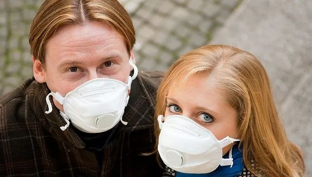

浙江新增8例确诊均来自意大利一餐厅，还有人想回国
原文链接 备份链接 澎湃新闻首席记者 葛熔金 3月2日，浙江省卫健委公布首例境外（意大利）输入病例王某（女）信息；3月3日，浙江新增境外输入确诊病例7例，均为王某的密切接触者，在意大利贝加莫同一家餐厅工作。 “这家餐厅去年11月才开业，据 …
视觉中国
记者：王磬
“
欧洲目前正进入病例激增时期，也正面临诸多与中国疫情爆发初期相似的挑战。
”
随着新冠疫情在欧洲蔓延，多国纷纷出现口罩短缺。2月29日，法国政府宣布，口罩将被列入处方药。药店不得把口罩卖给没有出具医生处方的顾客，以限制哄抢、将口罩留给最需要防护的医护人员。
据界面新闻了解，在米兰、巴黎、伦敦、布鲁塞尔、阿姆斯特丹等大城市，药店里均出现了口罩售罄、消毒用品短缺的现象。但与之形成对比的是，除了意大利北部地区，欧洲其他大城市的街头仍很少看到民众配戴口罩。
这些口罩都去了哪儿？医疗物资向来充足的欧洲，为何也突然陷入了“口罩荒”？欧洲各国的政府和企业又如何应对这一挑战？
截至发稿，已经有18个欧盟成员国报告确诊了新冠病例，其中意大利是重灾区，累计2036例，法德确诊病例也均逾百。欧盟已将疫情风险等级从“温和”上调至“高”。此轮疫情在欧洲的爆发始于2月21日意大利北部伦巴第大区出现的社区传染，但口罩供应却是早在此之前就已出现短缺迹象。
阿姆斯特丹一间药店的店员告诉界面新闻，尽管荷兰直到2月27日才确诊了本国的首例病例，但早在1月底时他们的口罩就已经供不应求，主要是亚洲群体在购买。药店当时打算增加采购，但已经很难找到货源。
德国药品批发协会在上周表示，药店现在很难再拿到新的货品，即使下单成功，也往往会面临延时和运输困难等问题。
在疫情中心意大利，口罩价格疯涨了数百倍。路透社援引一位米兰检察官的说法称，在伦巴第大区，一只普通口罩的在线价格甚至从平时的1欧分涨至10欧元，警方不得不介入调查。
居住在意大利、法国、英国的多位华人均向界面新闻表示，实体药店里已经很难寻觅口罩的踪影，网店里也多显示脱销，如果想要购买口罩只能通过华人群体“自寻渠道”。
不只是普通消费者，连医护人员都表达了对口罩短缺的担忧。
德国罗斯托克大学医院的医生向《德国之声》表示，目前面临的最大问题就是买不到防护口罩，大学医院的供应商表示可以提供半年的货量、但并不清楚它们有怎样的途径。在极端的情况下，医护人员将很可能需要重复使用口罩。
意大利护士工会向意大利媒体表示，口罩、防护服、手套等防护服严重缺失，很多地区已经用完。在托斯卡纳大区，甚至还发生了医院里的口罩箱被盗走的事情。
《纽约时报》指出，中国既是新冠疫情的中心，也是世界口罩生产的中心。中国每年口罩产量占全球的约50%，武汉疫情爆发，叠加春节假期，大量工厂停摆。中国随后又发布了防疫物资出口的管制措施。宁波一间外贸公司的总裁表示，疫情爆发之前他们每月出口60万至70万个医用口罩，但这个数字现在是零。包括欧洲在内的全球市场早已无法从中国获得常规的口罩供应。
在疫情初期，欧洲原有的口罩存量曾大量用于驰援中国。2月初，应中方请求，欧盟曾协调成员国向中国运送12吨的疫情防控急需物资。自武汉封城以来，大量居住在欧洲的华人通过零售或批发的方式，在欧洲各地收购并运送回国，尤以各地侨乡会和武汉地区高校的校友会为主要力量。
据界面新闻了解，这其中也存在个别欧洲华人商贩利用疫情信息的时间差、囤积口罩并高价转卖给本地民众的现象。一些欧洲华人微信群里流传的信息显示，“平时进价2.5（欧元的）50pz盒装口罩，现在被买到了20、50、100，甚至狮子大开口地叫卖200欧”。也因此有侨领出来呼吁，恳请欧洲华商不要再囤口罩，放一点给本地医护人员。
多国口罩短缺，这对欧洲的制造业产能形成了严峻挑战。
据意大利《24小时太阳报》2月中旬，该国口罩制造公司Dpi di Roma负责人Vittorio de Blasiis表示，“十天之内消耗了过去十年的口罩存量”。他表示因需求激增，每天都接到成百万的订单。不仅有来自中国的采购请求，也有国际大公司希望给员工采购的请求。
不过，大部分欧洲口罩制造商的生产线都设在中国，欧洲本身产能十分有限。由于中国禁止了医用口罩出口，一些制造商正在计划将生产线撤回本国或是迁到其他尚未受疫情影响的国家。
据捷克门户新闻网站iRozhlas报道，捷克医疗物品公司Respilon生产的口罩用于供应欧美市场，疫情后其需求量增加了10倍有余。该公司通常的生产流程是：由捷克提供口罩生产的原料、在中国加工完成。
该公司总裁Roman Zima表示，他们正在考虑在捷克和以色列建立新的生产线，预计5月可投入生产，届时可日产70000只普通口罩、6000只医用口罩。但他也表示，这恐怕仍然无法满足实际需求。欧洲目前有三大口罩制造商，从战略层面来看这是不够的。
欧洲多国政府也出台了紧急调配措施。调配重点是：确保医护人员拥有足够的口罩。
欧盟成员国之中，法国最早对口罩短缺做出反应。法国政府于上周宣布，已经紧急下单采购2亿口罩，但尚不确定何时能到货。政府已经将库存的1500万口罩发放至医疗前线，主要用来支持家庭医生和在医院里工作的医护人员。2月29日，法国又决定将口罩纳入处方药，以防止民众抢购。
意大利的中央和地方政府也在上周开展了一轮口罩采购。据意大利《晚邮报》，伦巴第大区政府已经紧急采购了30万个ffp3口罩、20万个医用口罩。意大利“新冠危机委员会”委员Angelo Borrelli表示，中央政府已经与意大利工业家联合会Confindustria合作，设立了专门的口罩采购渠道，并将在口罩到达之后根据各大区的疫情状况进行分配。
意大利政府尚未出台针对口罩的限购措施，但加大了对恶意抬价等倒卖行为的打击。在都灵，警方不久前破获一起不合规口罩的倒卖事件，一盒售价高达5000欧元。
英国政府也表示，将释放部分存量口罩，以缓解市场需求压力。德国政府此前也已经向药店发出通告，优先保障医护人员的口罩需求。
欧盟委员会在3月2日的新闻发布会上表示，欧盟已经协调18个受疫情影响的成员国共同进行物资采购，其中包括口罩。它们期待在一周之内收到相关物资，但尚未透露采购规模。
欧洲疾控中心（ECDC）在此前接受界面新闻采访时曾表示，欧盟国家或将激活大流行病防范计划，要保证医疗系统有足够的资源和人力去隔离和医治不断增长的新冠病人。
值得注意的是，关于普通民众是否需要佩戴口罩，意大利、法国、德国、英国等政府发布的官方防疫手册给出的建议基本类似：不需要。截至发稿，至少已有30个欧洲国家（不含俄罗斯）报告了确诊病例，其中意大利2036人、法国191人、德国157人、英国40人。
总的来说，这些欧洲国家的防疫手册都遵循了世卫组织的建议，强调了如下几点：勤洗手、咳嗽或打喷嚏时用手臂捂住、使用一次性纸巾、避免握手和不必要的身体接触等。
英国NHS表示，口罩在医院等场所非常重要，但是几乎没有证据显示，用口罩遮住口鼻可以降低健康人感染新冠病毒的概率。口罩的作用主要是防止病人将疾病传播给别人，因此那些已经有症状的人才需要佩戴口罩。
意大利卫生部援引世卫组织的说法，认为只有如下几类人才需要戴口罩：那些可能与病人有过接触的人、出现了咳嗽打喷嚏等症状的人、正在照顾疑似/确诊病人的人，以及医院的医护工作者。此外，在意大利北部的红色疫区——罗马涅、伦巴第、威尼托三个大区——民众应当佩戴口罩。
德国卫生部指出，普通人群佩戴口罩“没有意义”，应该将防疫重点放在个人卫生上。只有通过正确的方式佩戴口罩（例如有胡子的男性需要先刮光胡子等）、并保持一定频度的更换，否则接触被污染的口罩反而会带来感染风险。戴口罩还可能让人产生一种有安全感的错觉，从而忽略了其他卫生措施，如勤洗手。卫生部建议，民众如果出现了感冒的相关症状，应与家庭医生沟通，再决定是否佩戴、如何佩戴、以及佩戴哪一种型号的口罩。
法国卫生部建议，如果你曾在过去两周到过疫区，如中国、新加坡、韩国、伊朗、意大利北部三大区，可以佩戴口罩。但也强调，带有呼吸阀的口罩如ffp2应该留给医护人员。
不过，据界面新闻了解，欧洲华人群体内部对这些建议有些质疑之声。
中国正在经历“硬核”防疫，其中，口罩是民众防疫的基础物资，疫情严重的地方甚至出现了不戴口罩不能上街的强制措施。在这样的对比之下，有华人担心，欧盟有5亿人口，这也许是欧洲政府在口罩不足的情况下，为防止民众抢购而做出的策略性表态，并非真的因为口罩真的无效。
未经授权 禁止转载

文章已于修改
原文链接 备份链接 澎湃新闻首席记者 葛熔金 3月2日，浙江省卫健委公布首例境外（意大利）输入病例王某（女）信息；3月3日，浙江新增境外输入确诊病例7例，均为王某的密切接触者，在意大利贝加莫同一家餐厅工作。 “这家餐厅去年11月才开业，据 …
原文链接 备份链接 近日，多国新冠肺炎确诊人数暴增。美国出现第二例新冠肺炎死亡病例，意大利新冠肺炎累计病例1694例，日本北海道宣布进入紧急状态，世界卫生组织总干事谭德塞2月28日宣布将新冠肺炎疫情全球风险级别由此前的“高”上调为“非常 …
原文链接 备份链接 意大利的新冠肺炎疫情，在亚洲之外最为严重。 截至2月29日，意大利累计确诊新冠病毒肺炎感染病例1128例，累计死亡29例。该国最早的确诊病例出现在1月30日，是一对来自武汉的夫妻游客。直到2月21日，确诊人数仍仅为3 …
原文链接 备份链接 体坛周报全媒体驻意大利记者 王勤伯 （一） 保加利亚卢多戈雷茨欧联杯1/16决赛来米兰打客场，球员一路都戴着口罩，甚至在进入球场的时候也戴着，只有出场比赛没有戴。 空场比赛将是本周末意甲联赛的普遍景象。昨天发表在体坛 …
原文链接 备份链接 刚刚过去的周末对于意大利而言无疑是一场公共安全危机的从天而降，境内确诊病例从2月20日的寥寥数人激增至2月23日的152人，病亡人数已增至3名，2月24日意大利确诊和死亡人数更分别攀升至219人和5人。意大利总理孔特表 …